Unreal Engine Content Creation Blog
Overview
This blog-like page is an experiment to allow folks to share nuggets of information in an easy and convenient way without having to worry about updating it once it becomes outdated. Unlike regular documentation, blogs can't be outdated - the only danger is being abandoned. Our hope is that we'll be able to get enough momentum behind this by replacing it as our main way of sharing tips & tricks internally, replacing emails to our content creation alias. Long term it would be nice if everyone, including licensees, contributed to it and helped us improving our documentation and knowledge-sharing this way.
Why a blog? The main goal is to reduce the effort required to share useful information and make it easy to share the updates with a lot of people. The current format has a very low update effort, encouraging quick blurbs about newly added features, newfound knowledge or just general tips & tricks.
What to post? Pretty much anything goes as long as it would be useful to someone. Tried an optimization and it didn't work out? Please let us know with a bit of detail why it didn't work. Obviously the same goes for one that worked. ;-) Found a useful plugin or tool? Please post an entry. Know a good way to speed up the import pipeline? Please post!
Why not a real blog? Mostly due to technical limitations, though we might look into overcoming those if it takes off.
The plan is for us to regularly go over this page and make sure that all tips & tricks on here are reflected in the actual documentation.
Blog Entries
Recent entries
March 2012
Improved Texture Blending with mask textures on mobile platforms
posted on 2012/03/21 by Gerke Max Preussner
Beginning with the April 2012 QA approved build, texture blending on mobile platforms has changed slightly when using the mask texture as the blending source. Content developers may have to update existing materials, as this is a breaking change.
Previously, only the first MobileDetailTexture was usable in this mode, and the mask texture's alpha channel provided the blend factor that determined how much of the detail texture was to be blended in with the base texture.
It is now possible to use all three detail textures for texture blending. While the mask texture's alpha channel is no longer used, its RGB values now determine the blend factors. The Red channel is mapped to MobileDetailTexture, the Green channel to MobileDetailTexture2, and the Blue channel to MobileDetailTexture3.
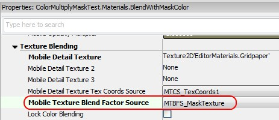
December 2011
Color Grading on mobile platforms
posted on 2011/12/22 by Gerke Max Preussner
A simplified, formula based implementation of color grading is now available on mobile platforms. A matching material function for the Mobile Emulation feature in UnrealEd is provided as well. Check out the ColorGrading page for further details.
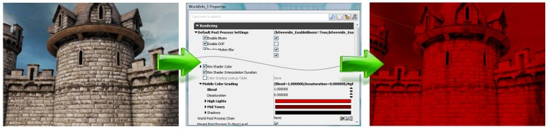
August 2011
Fixing specular highlights when using X and Y symmetrical texture mirroring
posted on 2011/8/15
Texturing mirroring is useful for reusing texture memory, but it can lead to problems with specular lighting. Here a mesh is composed of four parts which uses the same UV coordinates.
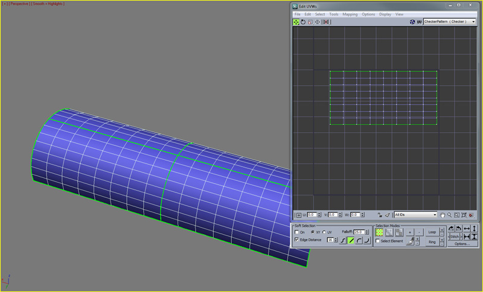
As you can see, a white spot appears.
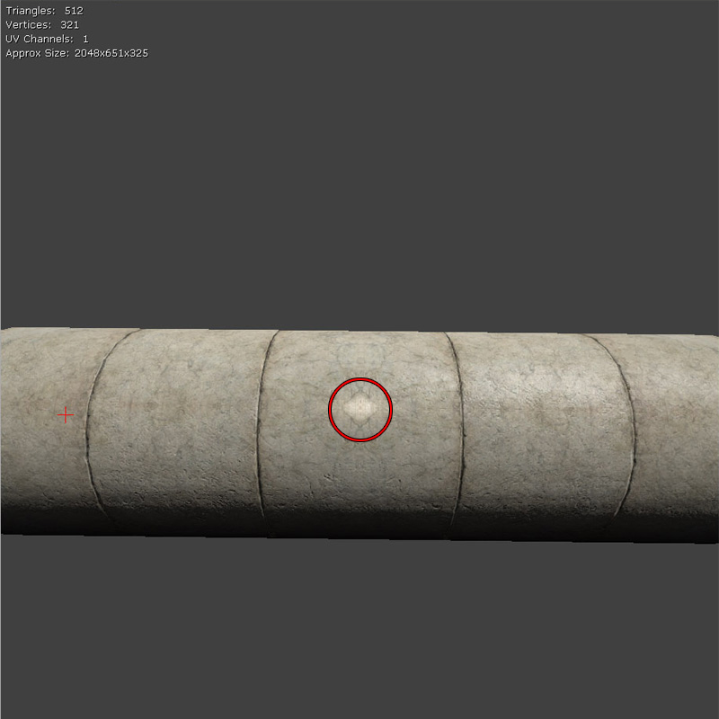
By simply moving the other meshes UV coordinates to use UV coordinate range of 1.f to 2.f...
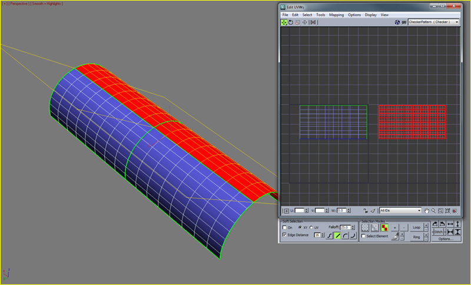
The issue is now gone!
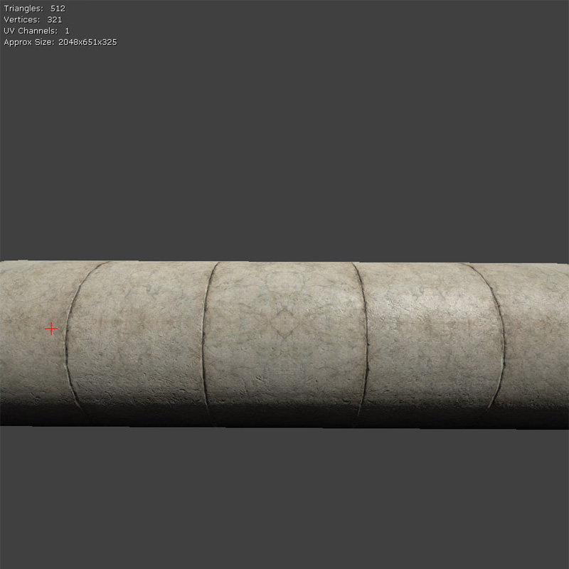
Cropped Emissive Assistant
posted on 2011/8/12
The Cropped Emissive Assistant is a Photoshop tool that assists in the process of making cropped emissive textures for use in Unreal Engine 3. The tool's purpose is to reduce the time and hands-on math required to convert wasteful emissive textures into smaller ones, by providing a means to automatically save out a chunk at the proper resolution, save your selection, and provide the float values required by a special Material Function to place the cropped texture in the appropriate place.
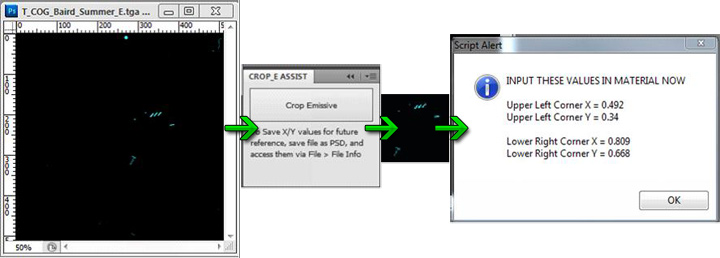
Movie Capture
posted on 2011/8/9
Do you want to capture your matinees to avi movies or do you want to capture in-game movies? Read more about it here.
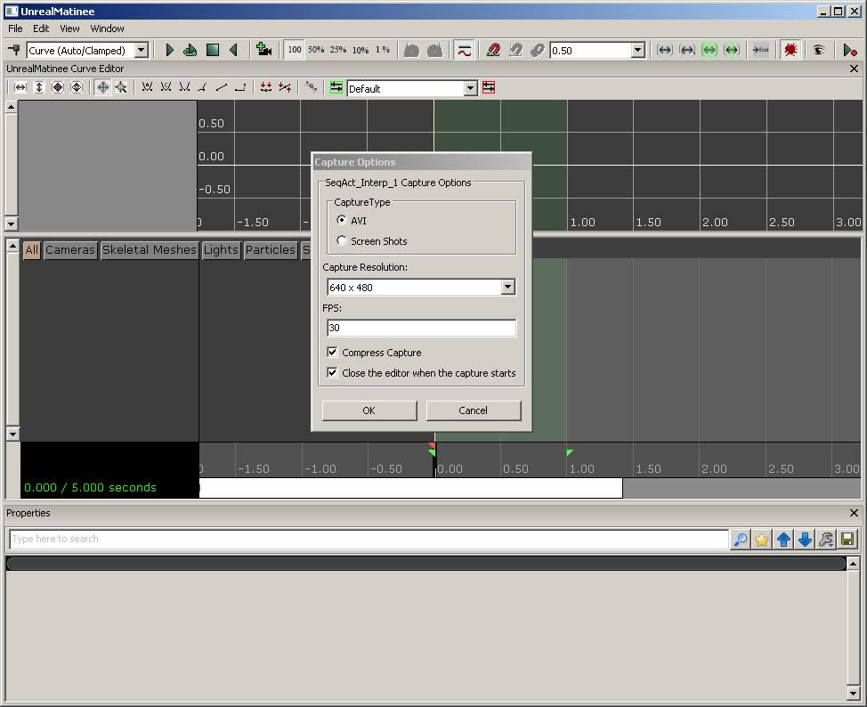
July 2011
Viewing FBX files in Quick Time
posted on 2011/7/27
Did you know it's possible to quickly view FBX files in Quick Time on the PC? Read more about it here.
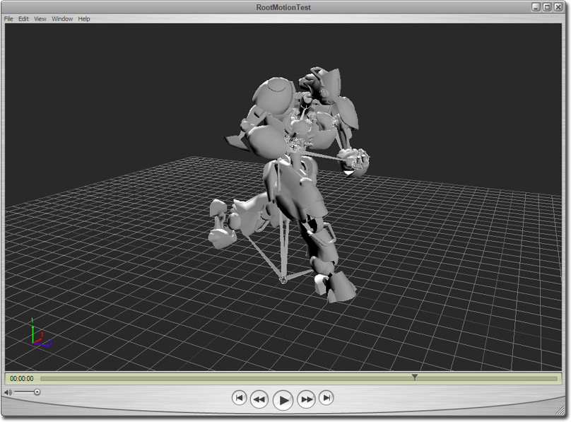
Post Processing Anti Aliasing
posted on 2011/7/12 by Martin Mittring Documentation here: PostProcessAA.
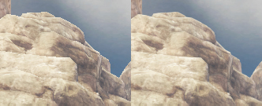
May 2011
Exponential Height Fog Optimization
posted on 2011/5/13 Martin Mittring Documentation here (bottom of the page): HeightFog
Exponential Height Fog got optimized by culling pixels that are nearer than some some start distance. The start value can be set by level designers.
April 2011
Creating Clean Lightmaps
posted on 2011/4/15
The Unwrapping UVs for Ligthmaps page has been updated with some info on techniques for creating clean lightmaps.
(Click for full size)
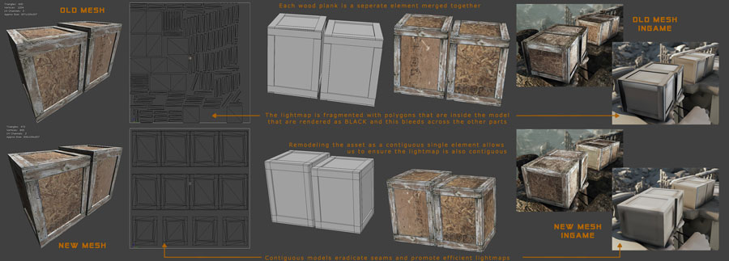
Texture Optimization Techniques
posted on 2011/4/15
There is a new UDN page on Texture Optimization Techniques.
Optimizing levels for Splitscreen
posted on 2011/4/14 by Daniel Wright
There's a new UDN page on split screen profiling tools.
March 2011
Profiling Effects with PIX
posted on 2011/3/21 by Daniel Wright
There's a new UDN page that describes how technical artists can use PIX to profile effects on Xbox 360.
Editor preview player mode
posted on 2011/3/17 by Pete Bennett
We recently added an editor feature to preview player height in the world. This feature will enable users to visualize a predefined mesh in the world without having to add the mesh to the world. Currently, the feature only allows static meshes to be previewed. You may specify as many preview meshes as you wish. At Epic, artists use this feature to compare the height of an object in relation to a player mesh, such as Marcus. However, this feature can use any static mesh of your choosing.
Usage:
To activate the preview mesh, hold down the backspace (\) key while the editor viewport has focus. Release the backspace key when you are finished previewing.
To cycle to the next preview mesh, hold down shift and press the backspace key.
Specifying Preview Meshes
You can add or remove preview meshes in (YourGameName)UserSettings.ini file. Meshes must be listed under the [EditorPreviewMesh] category. The default mesh for the engine is set to the TexPropCubes mesh, as such:
PreviewMeshNames=" EditorMeshes.TexPropCubes "
UDKGame overrides the TexPropCubes mesh in DefaultEditorUserSettings.ini to point to the warrior statue, as such:
PreviewMeshNames=" ASC_Deco_Statue.SM.Mesh.S_ASC_Deco_SM_Statue_Warrior_BASEPOSE "
New DirectX 11 documentation!
posted on 2011/3/11 by Daniel Wright
Documentation on how to run UE3 in DirectX 11 and how to use the new features is now up.
Archives
See the Content Blog Archive for all entries from past years.
November 2010
Vertex color matching tool
posted on 2010/11/29 by MattKuhlenschmidt
Archived: Vertex color matching tool
October 2010
Bloom improvements
posted on 2010/10/29 by Martin Mittring Documentation here: Bloom
Archived: Bloom improvements
Multiple MotionBlur improvements
posted on 2010/10/28 by Martin Mittring Documentation here: MotionBlur MotionBlurSoftEdge MotionBlurSkinning.
Archived: Multiple MotionBlur improvements
Tonemapper improvements
posted on 2010/10/28 by Martin Mittring Documentation here: ColorGrading.
Archived: Tonemapper improvements
September 2010
Bulk texture property editing
posted on 2010/09/01 by Jason Bestimt
Archived: Bulk texture property editing
August 2010
One pass lighting for hair
posted on 2010/08/04 by Daniel Wright
Archived: One pass lighting for hair
Whole scene shadows for point lights
posted on 2010/08/04 by Daniel Wright
Archived: Whole scene shadows for point lights
July 2010
New Character indirect lighting settings
posted on 2010/07/20 by Daniel Wright
Archived: New Character indirect lighting settings
Detail Lighting editor viewmode
posted on 2010/07/20 by Daniel Wright
Archived: Detail Lighting editor viewmode
Precomputed Visibility
posted on 2010/07/07 by Daniel Wright
Archived: Precomputed Visibility
Source Control Revert Dialog
posted on 2010/07/06 by Billy Bramer
Archived: Source Control Revert Dialog
June 2010
Vertex colors on Skeletal Meshes
posted on 2010/06/23 by Matt Kuhlenschmidt
Archived: Vertex colors on Skeletal Meshes
Explicit Normal Support
posted on 2010/06/23 by Matt Kuhlenschmidt
Archived: Explicit Normal Support
Bloom improvements
posted on 2010/06/02 by Daniel Wright
Archived: Bloom improvements
May 2010
Penumbra Scale
posted on 2010/05/28 by Ryan Brucks
Archived: Penumbra Scale
Automatically re-import textures
posted on 2010/05/26 by Jason Bestimt
Archived: Automatically re-import textures
Per map post process chain.
posted on 2010/05/24 by Matt Kuhlenschmidt
Archived: Per map post process chain.
Exponential Height Fog
posted on 2010/05/20 by Daniel Wright
Archived: Exponential Height Fog
April 2010
FBX Importer Update
posted on 2010/04/29 by Mike Fricker
Archived: FBX Importer Update
Light Shafts
posted on 2010/04/14 by Daniel Wright
Archived: Light Shafts
Depth Dependent Halos
posted on 2010/04/14 by Jason Bestimt (related topics: UnrealEd)
Archived: Depth Dependent Halos
ProcBuilding Documentation
posted on 2010/04/2 by James Golding
Archived: ProcBuilding Documentation
March 2010
Processing Optimized Normals
posted on 2010/03/26 by Kevin Johnstone
Archived: Processing Optimized Normals
Asset Consolidation
posted on 2010/03/23 by Jason Bestimt
Archived: Asset Consolidation
Encoding Video
posted on 2010/03/23 by Nick Atamas
Archived: Encoding Video
Dynamically Shadowed Translucency
posted on 2010/03/22 by Daniel Wright
Archived: Dynamically Shadowed Translucency
Changes to previewing unbuilt lighting
posted on 2010/03/18 by Daniel Wright
Archived: Changes to previewing unbuilt lighting
Cascaded Shadow Maps and DominantDirectionalLightMovable
posted on 2010/03/18 by Daniel Wright
Archived: Cascaded Shadow Maps and DominantDirectionalLightMovable
Package List Filter
posted on 2010/03/18 by Nick Atamas
Archived: Package List Filter
Drag and Drop Changes
posted on 2010/03/17 by Nick Atamas
Archived: Drag and Drop Changes
Material Editor Node Previewing
posted on 2010/03/12 by Matt Kuhlenschmidt (related topics: UnrealEd)
Archived: Material Editor Node Previewing
Property Window Script-Defined Ordering
posted on 2010/03/12 by Jason Bestimt (related topics: UnrealEd)
Archived: Property Window Script-Defined Ordering
Copy/Paste Asset Reference
posted on 2010/03/03 by Nick Atamas
Archived: Copy/Paste Asset Reference
MipGenSettings
posted on 2010/03/01 by Martin Mittring
Archived: MipGenSettings
SkeletalMeshCinematicActor
posted on 2010/03/01 by Daniel Wright
Archived: SkeletalMeshCinematicActor
February 2010
Attachment Editor
posted on 2010/02/16 by James Golding
Archived: Attachment Editor
New kismet functionality for "Set VectorParam" and "Get Location and Rotation" actions
posted on 2010/02/09 by Rob McLaughlin (related topics: UnrealEd)
Archived: New kismet functionality for "Set VectorParam" and "Get Location and Rotation" actions
Property Window Favorites
posted on 2010/02/04 by Jason Bestimt (related topics: UnrealEd)
Archived: Property Window Favorites
January 2010
Status Bar Notifications
posted on 2010/01/28 by Jason Bestimt (related topics: UnrealEd)
Archived: Status Bar Notifications
New Color Picker
posted on 2010/01/19 by Jason Bestimt (related topics: UnrealEd)
Archived: New Color Picker
December 2009
Drag and Drop Matinee Connectors (12/17/2009)
posted on 2009/12/17 by Mike Fricker (related topics: UnrealEd)
Archived: Drag and Drop Matinee Connectors (12/17/2009)
Animation documents are up-to-date! (12/8/2009)
posted on 2009/12/7 by Laurent Delayen (related topics: UnrealEd)
Archived: Animation documents are up-to-date! (12/8/2009)
AnimSet viewer - morph target keys! (12/7/2009)
posted on 2009/12/7 by Lina Halper (related topics: UnrealEd)
Archived: AnimSet viewer - morph target keys! (12/7/2009)
November 2009
New Video Tutorials! (11/30/2009)
posted on 2009/11/30 by Richard Nalezynskil? (related topics: UnrealEd)
Archived: New Video Tutorials! (11/30/2009)
New Geometry Mode Texture (11/30/2009)
posted on 2009/11/30 by Warren Marshall (related topics: UnrealEd)
Archived: New Geometry Mode Texture (11/30/2009)
New Editor Features (11/2009)
posted on 2009/11/24 by Mike Fricker (related topics: UnrealEd)
Archived: New Editor Features (11/2009)
Taking Better Photographs for Textures
posted on 2009/11/21 by Jordan Walker (related topics: UnrealEd)
Archived: Taking Better Photographs for Textures
World Position Offset (aka vertex deformation)
posted on 2009/10/29 by Daniel Wright (related topics: UnrealEd)
Archived: World Position Offset (aka vertex deformation)
October 2009
Lighting Build Info dialog
posted on 2009/10/20 by Scott Sherman (related topics: UnrealEd)
Archived: Lighting Build Info dialog
New ViewModes
posted on 2009/10/20 by Scott Sherman (related topics: UnrealEd)
Archived: New ViewModes
Viewport Panning Change
posted on 2009/10/12 by Jason Bestimt (related topics: UnrealEd)
Archived: Viewport Panning Change
Mesh Paint tool
posted on 2009/10/12 by Mike Fricker (related topics: UnrealEd)
Archived: Mesh Paint tool
Shader Complexity Improvements
posted on 2009/10/01 by Daniel Wright (related topics: UnrealEd)
Archived: Shader Complexity Improvements
Custom Thumbnails
posted on 2009/10/01 by Jason Bestimt (related topics: UnrealEd)
Archived: Custom Thumbnails
New "Pivot" Controls
posted on 2009/10/01 by Warren Marshall (related topics: UnrealEd, Static Meshes)
Archived: New "Pivot" Controls
September 2009
Changes in Default Settings
posted on 2009/09/25 by Daniel Wright (related topics: Content Creation)
Archived: Changes in Default Settings
Advanced Mesh Placement
posted on 2009/09/22 by Warren Marshall (related topics: UnrealEd, Static Meshes)
Archived: Advanced Mesh Placement
Light Actors in the Content Browser
posted on 2009/09/22 by Jordan Walker (related topics: Level Editing)
Archived: Light Actors in the Content Browser
Basic Translucent Primitive Archetypes
posted on 2009/09/21 by Ryan Brucks (related topics: Level Editing)
Archived: Basic Translucent Primitive Archetypes
Instanced Light Workflow
posted on 2009/09/18 by Jordan walker (related topics: Level Editing)
Archived: Instanced Light Workflow
Editor Performance
posted on 2009/09/18 by Daniel Wright and Phil Cole (related topics: UnrealEd)
Archived: Editor Performance
Padding in lightmap UVs
posted on 2009/09/10 by Daniel Wright (related topics: Rendering)
Archived: Padding in lightmap UVs
Important!
You are viewing documentation for the Unreal Development Kit (UDK).
If you are looking for the Unreal Engine 4 documentation, please visit the Unreal Engine 4 Documentation site.